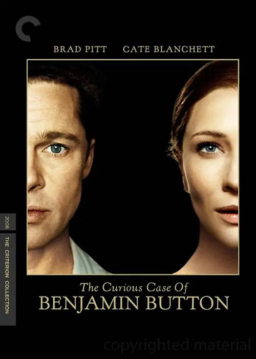

故事开始于蒙特娄，也结束于蒙特娄。 一名在找寻灵感的作家（拉菲·斯波 Rafe Spall 饰）无意间得知派·帕帖尔（伊尔凡·可汗 Irrfan Khan 饰）的传奇故事。 派的父亲（阿迪勒·侯赛因 Adil Hussain 饰）开了一家动物园。 因这样特殊的生活环境，少年派（苏拉·沙玛 Suraj Sharma 饰 ）对信仰与人的本性自有一套看法。 在派17岁那一年，他的父母决定举家移民加拿大以追求更好的生活，而他也必须离开他的初恋情人。 在前往加拿大的船上，他们遇见一位残忍成性的法国厨师（杰拉尔·德帕迪约 Gérard Depardieu 饰）。 当天深夜在茫茫大海中，原本令派感到刺激无比的暴风雨一瞬间就成了吞噬货船的大灾难。 派却奇迹般地活了下来，搭着救生船在太平洋上漂流，而且有一名最令人意想不到的同伴--理查德·帕克，一只孟加拉老虎。 神奇的冒险旅程就这样意外开始了…

老富翁爱德华•科尔（杰克•尼克尔森 Jack Nicholson 饰）近年来在公立医院的私有化改造事业中获利颇丰。 他为节省成本，规定病房“一房两床”的做法颇受非议，但性格强势的科尔不以为意，岂料他不久被检查出罹患癌症，本欲入住单人病房的科尔在舆论压力下只得与另一位病人--老卡特（摩根•弗里曼 Morgan Freeman 饰）同处一室。 汽车修理技师老卡特博闻强识，将三个子女培养成才，但代价是牺牲了年轻时要做历史教授的梦想。 曾经结婚多次如今却孤身一人的科尔逐渐对卡特产生了兴趣，两位老人在病房中结下了友谊。 科尔偶然发现了卡特的“遗愿清单”，他决定运用自己的力量，让那些纸面上的疯狂构想一一实现，去发现人生的真正意义……
飓风正在侵袭美国新奥尔良，一位病危的老妇睁开了她的睡眼。 老妇名叫戴茜（凯特·布兰切特饰），她叫女儿凯若琳（朱莉娅•奥蒙德饰）为她阅读一本日记。 这本日记的作者叫本杰明•巴顿（布拉德•皮特饰）。 本杰明出生在第一次世界大战停战之时，但生来便像个老人的他被父亲当作怪物，被遗弃在了养老院。 本杰明在养老院与老人们一起生活。 但谁都没有想到，本杰明逆向发育--越活越年轻！ 也许“越活越年 轻”是某些人的梦想，但真正这样成长的本杰明却有了别人无法理解的烦恼与快乐. 穿越半世纪的世界变革，本杰明身处其中，感受别人感受不到的感受。 为何母亲会让自己念这本日记？本杰明•巴顿此人与母亲有什么关系？凯若琳陷入了深深的疑惑与好奇之中。